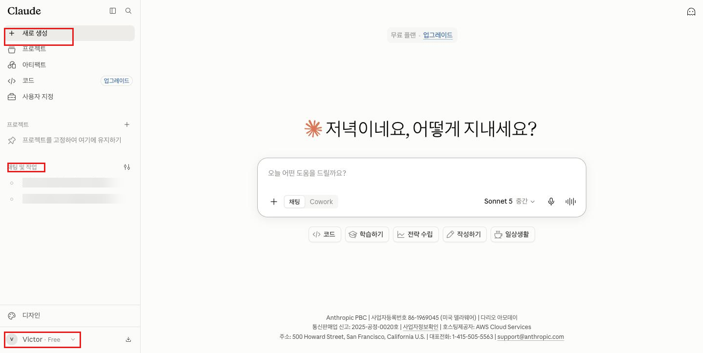
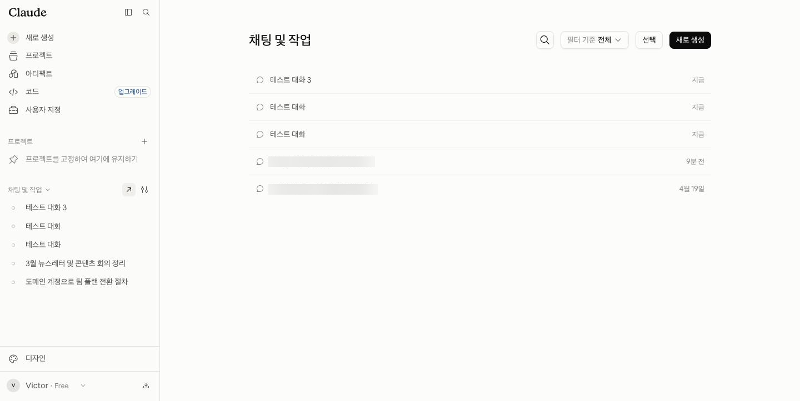
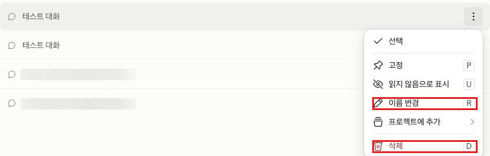
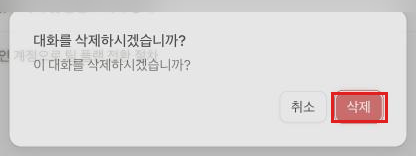
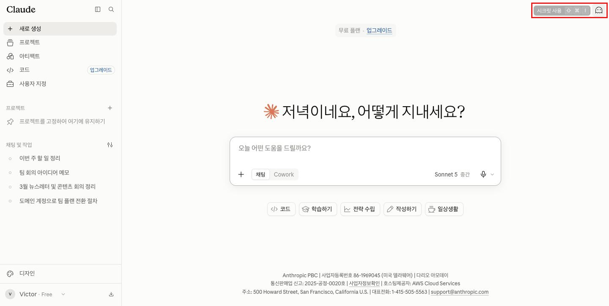
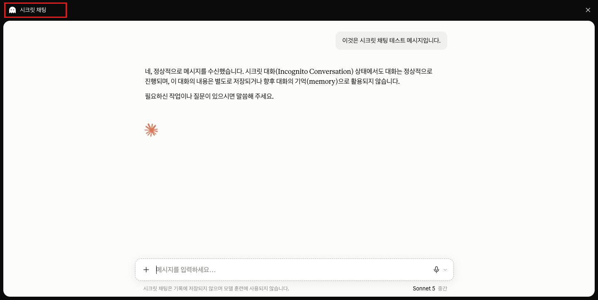
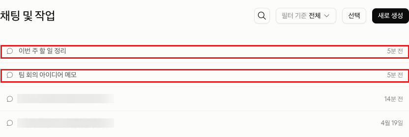

Claude · 초급 · 모듈 02
사이드바와 입력창의 구성 요소를 살펴보고, 대화 이름을 바꾸거나 삭제해 정리하고, 기록에 남지 않는 시크릿 채팅을 언제 어떻게 쓰는지 익힙니다.
이 모듈을 마치면 다음을 할 수 있습니다.
| 항목 | 내용 |
|---|---|
| 필요 플랜 | 없음. Free 계정으로 충분합니다. |
| 설치 | 불필요. 웹 브라우저만 있으면 됩니다. |
| 계정 조건 | 모듈 01과 동일(지원 지역, 만 18세 이상). 이미 로그인했다면 다시 확인할 필요 없습니다. |
| 사전 지식 | 모듈 01 수료 — 로그인, 새 대화 시작, 프롬프트 전송이 가능해야 합니다. |
| 예상 사용량 | 짧은 프롬프트 3회 정도. 모두 한두 문장짜리 연습용입니다. |
이 문서는 화면 속 위치를 기준으로 설명합니다. 한국어 표기가 공식 문서로 확인된 경우에만 따옴표로 인용했고, 확인되지 않은 것은 공식 자료 미확인으로 남겨 두었습니다.
| 이 문서에서 부르는 이름 | 확인 상태 |
|---|---|
| "채팅 및 작업" (사이드바 항목) | 확인됨 (출처: support.claude.com/ko/articles/8230524, 2026-08-20 확인) |
| "⋮" 버튼 (대화 위 더보기 메뉴) | 확인됨 (출처: support.claude.com/ko/articles/8230524, 2026-08-20 확인) |
| "선택" 버튼 (일괄 삭제용) | 확인됨 (출처: support.claude.com/ko/articles/8230524, 2026-08-20 확인) |
| "시크릿 사용" 버튼 (유령 모양 아이콘, 시크릿 채팅 시작) | 확인됨 (출처: 화면 직접 확인, 2026-08-26) |
| "시크릿 채팅" 레이블 | 확인됨 (출처: 화면 직접 확인, 2026-08-26) |
| 새 대화 시작 아이콘 | 공식 자료 미확인 — 모듈 01에서 캡처 확인 후 갱신 예정 |
support.claude.com의 "익명 채팅 사용" 문서(articles/12260368)는 이 기능을 "유령 아이콘"·"익명 채팅"으로 설명하지만, 2026-08-26 기준 실제 화면에는 "시크릿 사용" 버튼과 "시크릿 채팅" 레이블로 표시됩니다. 이 문서는 화면에서 직접 확인한 표기를 기준으로 작성했습니다.
이 문서의 설명은 위치를 기준으로 하므로 화면 언어와 무관하게 따라갈 수 있습니다. 표시 언어를 바꾸는 방법은 계정 설정 변경이라 중급 모듈에서 다룹니다.
초급 트랙은 원칙적으로 되돌리기 어려운 동작을 다루지 않습니다. 다만 대화 삭제는 대화 관리의 핵심 동작이고, 학습자가 언젠가 반드시 마주칩니다. 규칙을 모른 채 실제 업무 대화에 처음 시도하는 것보다, 안전한 조건에서 한 번 경험해 보는 편이 낫다고 판단해 이 모듈에서만 예외로 다룹니다. 초급 트랙 전체에서 되돌릴 수 없는 동작을 실습하는 것은 이 한 번뿐입니다.
위험을 줄이기 위해 세 가지 조건을 둡니다. ① 실습에서 삭제하는 대상은 이 모듈에서 새로 만든 연습용 대화뿐입니다. ② 기존 업무 대화는 절대 삭제하지 않습니다. ③ 삭제 전 확인 대화상자에서 멈추면 취소할 수 있다는 점을 먼저 안내합니다.
사이드바는 지금까지 나눈 대화를 관리하는 곳이고, 대화는 언제든 이름을 바꾸거나 정리할 수 있습니다. 다만 삭제와 시크릿 채팅 종료, 이 두 가지는 되돌릴 수 없다는 점만 기억하면 됩니다.
| 구성 요소 | 역할 |
|---|---|
| 새 대화 시작 아이콘 | 빈 대화를 새로 엽니다. 모듈 01에서 이미 써 봤습니다. |
| 대화 목록 | 최근 대화가 나열됩니다. 대화 위에 마우스를 올리면 "⋮" 버튼이 나타납니다. |
| "채팅 및 작업" | 전체 채팅 기록을 확인합니다. 최근 목록에 없는 오래된 대화도 여기서 찾습니다. (출처: support.claude.com/ko/articles/8230524, 2026-08-20 확인) |
| 왼쪽 아래 프로필 아이콘 | "설정" 등 계정 관련 메뉴로 들어가는 입구입니다. 모듈 01에서 사용량 확인에 썼습니다. |
비슷해 보이지만 용도가 다릅니다.
| 방법 | 기존 대화 내용 | 되돌릴 수 있는가 | 주로 쓰는 상황 |
|---|---|---|---|
| 이름 변경 | 그대로 유지 | 예 — 다시 바꾸면 됩니다 | 나중에 찾기 쉽게 정리할 때 |
| 삭제 | 제거됨 | 아니요 | 더 이상 필요 없는 대화를 치울 때 |
| 시크릿 채팅으로 시작 | 처음부터 저장 안 됨 | 해당 없음(저장된 적이 없음) | 기록을 남기고 싶지 않은 일회성 대화 |
대화를 삭제하면 목록에서 즉시 사라지고, 30일 이내에 백엔드 시스템에서도 완전히 삭제됩니다. 되돌리는 버튼은 없습니다. (출처: support.claude.com/ko/articles/8230524, 2026-08-20 확인) 다만 삭제 전에 확인 대화상자가 한 번 더 뜨므로, 그 단계에서 멈추면 취소할 수 있습니다.
시크릿 채팅은 채팅 기록이나 Claude의 메모리에 저장되지 않는 임시 대화입니다. 모든 플랜(Free 포함)에서 쓸 수 있고, Claude 모델 학습에도 쓰이지 않습니다. (출처: support.claude.com/ko/articles/12260368, 2026-08-20 확인)
시크릿 채팅은 일반 대화로 바꿀 수 없고, 대화 내용을 저장할 방법도 없습니다. 한 번 닫으면 그 내용을 다시 볼 수 없습니다. (출처: support.claude.com/ko/articles/12260368, 2026-08-20 확인) 그래서 이 모듈의 실습에서는 중요하지 않은 연습용 문장만 씁니다.
참고로 Team·Enterprise 플랜에서는 시크릿 채팅도 조직의 데이터 보관 정책에 따라 최소 30일간 내부적으로 보관되며, 계정 소유자의 데이터 내보내기 대상에 포함됩니다. (출처: support.claude.com/ko/articles/12260368, 2026-08-20 확인)
만들 결과물: 이름을 바꾼 대화 2건 + 삭제 경험 1건 + 시크릿 채팅 사용 경험 1건.
로그인한 화면에서 왼쪽 사이드바를 봅니다. 위에서부터 새 대화 시작 아이콘, 대화 목록, "채팅 및 작업"이 보이고, 맨 아래에 프로필 아이콘이 있습니다.

사이드바에서 "채팅 및 작업" 문구를 클릭하면 사이드바 안에서 그 섹션이 접히거나 펼쳐지기만 합니다. 오래된 대화까지 모두 보이는 전체 목록은 그 옆의 "›" 화살표를 클릭하거나, 주소창에 claude.ai/recents를 입력해 들어갑니다.

새 대화를 열고 아래 프롬프트를 붙여 넣은 뒤 "제출" 버튼을 클릭합니다. 그다음 새 대화를 한 번 더 열고 같은 과정을 반복합니다. 이렇게 만든 대화 2개를 다음 단계에서 정리 연습에 씁니다.
이 대화는 이름 바꾸기·삭제 연습용입니다. "확인"이라고만 답해 주세요.목록에서 대화 위에 마우스를 올리고 오른쪽의 "⋮" 버튼을 클릭합니다. 메뉴에는 "선택"·"고정"·"읽지 않음으로 표시"·"프로젝트에 추가"·"이름 변경"·"삭제" 등이 나열되며, 이 중 "이름 변경"을 선택하고 원하는 이름을 입력합니다. 모듈 01에서 만든 대화와 방금 만든 연습용 대화 2개, 총 3개 모두에 이 과정을 반복합니다.

남은 연습용 대화 하나 위에 마우스를 올리고 "⋮" → "삭제"를 클릭합니다. 확인 대화상자에서 "삭제"를 한 번 더 클릭해야 실제로 삭제됩니다. 3-3과 4-4에서 본 것처럼 이 동작은 되돌릴 수 없습니다. 반드시 3단계에서 만든 연습용 대화에만 수행하고, 기존 업무 대화는 건드리지 마세요.

사이드바의 새 대화 시작 아이콘으로 빈 대화를 엽니다(프로젝트 안이 아니라 일반 대화여야 합니다). 화면 오른쪽 위 모서리에 유령 모양 아이콘이 보입니다.

"시크릿 사용" 버튼을 클릭합니다. 화면에 검은 테두리와 왼쪽 위 "시크릿 채팅" 표시가 나타나면 활성화된 것입니다. 아래 프롬프트를 붙여 넣고 "제출" 버튼을 클릭한 뒤, 오른쪽 위의 "x"를 클릭해 닫습니다. 닫으면 다시 열 수 없으니 연습용 문장 하나만 보내고 바로 닫아 보세요.
지금 시크릿 채팅인가요? 맞다면 그렇다고만 답해 주세요.
사이드바에서 "채팅 및 작업"을 다시 엽니다. 이름을 바꾼 대화 2개는 새 이름으로 보이고, 삭제한 대화는 목록에 없어야 합니다. 방금 닫은 시크릿 채팅은 처음부터 저장되지 않으므로 목록에 나타나지 않는 것이 정상입니다.

아래 "예상 출력"은 응답 예시입니다. 성공 여부는 문구가 아니라 화면 상태(이름이 바뀌었는지, 목록에서 사라졌는지, 테두리가 나타났는지)로 판단합니다.
사전 준비물: 로그인한 Claude 계정. 새 대화를 2번 새로 엽니다.
이 대화는 이름 바꾸기·삭제 연습용입니다. "확인"이라고만 답해 주세요.예상 출력(응답 예시): "확인"이라는 짧은 응답, 또는 이와 비슷한 짧은 확인 문구가 나옵니다.
성공 확인 방법: 사이드바 대화 목록에 새 항목이 하나 더 생겼다면 성공입니다. 응답 문구 자체는 중요하지 않습니다.
사전 준비물: 프로젝트 밖에서 새 대화를 열고, 오른쪽 위 "시크릿 사용" 버튼을 클릭해 시크릿 모드를 켠 상태.
지금 시크릿 채팅인가요? 맞다면 그렇다고만 답해 주세요.예상 출력(응답 예시): 시크릿 채팅이 맞다는 짧은 확인 답변이 나옵니다.
성공 확인 방법: 응답 문구보다 화면의 검은 테두리와 왼쪽 위 "시크릿 채팅" 표시가 보이는지로 확인합니다. 그 표시가 없다면 "시크릿 사용" 버튼을 제대로 클릭했는지 다시 확인하세요.
| 증상 | 원인 | 해결 |
|---|---|---|
| 대화 위에 마우스를 올려도 "⋮" 버튼이 안 보인다 | 마우스가 대화 행 위에 정확히 있지 않음 | 대화 이름 위로 마우스를 다시 올려 봅니다. 모바일 앱에서는 대화를 길게 눌러야 합니다. |
| 대화를 삭제했는데 목록에 여전히 보인다 | 확인 대화상자에서 "삭제"를 다시 클릭하지 않음 | "⋮" → "삭제"를 다시 눌러 확인 대화상자가 뜨는지 보고, 그 안의 "삭제" 버튼을 클릭합니다. |
| 새 대화를 열었는데 "시크릿 사용" 버튼이 안 보인다 | 프로젝트 안에서 대화를 시작함 | 시크릿 모드는 프로젝트 밖의 대화에서만 나타납니다. 프로젝트를 쓰지 않는 상태에서 새 대화를 열어 보세요. |
| 시크릿 채팅을 닫았는데 다시 보고 싶다 | 시크릿 채팅은 저장되지 않으며 닫으면 복구할 방법이 없음 | 되돌릴 수 없습니다. 중요한 내용은 시크릿 채팅을 닫기 전에 따로 복사해 두는 습관을 들이세요. |
| 이름을 바꿨는데 목록에 그대로 보인다 | 화면이 아직 갱신되지 않음 | "채팅 및 작업" 목록을 닫고 다시 열어 확인합니다. |
모듈 03으로 넘어가기 전에 스스로 확인하세요.
이 모듈에는 캡처 7장이 필요합니다.
| 번호 | 화면 | 진입 경로 | 캡처 범위 | 강조 표시 | 캡션 |
|---|---|---|---|---|---|
| C-01 | 사이드바 전체 구성 | 로그인한 기본 화면 | 브라우저 창 전체 | 새 대화 아이콘·"채팅 및 작업"·프로필 아이콘 | 사이드바의 주요 구성 요소. 이 3곳을 이 모듈에서 사용한다. |
| C-02 | 전체 채팅 기록 목록 | 사이드바에서 "채팅 및 작업" 클릭 | 대화 목록 전체 | 없음 | 전체 채팅 기록. 지난 대화를 여기서 다시 찾는다. |
| C-03 | 대화 위 "⋮" 메뉴 | 대화에 마우스 올리기 → "⋮" 클릭 | 해당 대화 행과 열린 메뉴 | "이름 변경"·"삭제" 옵션 | 대화 위에서 열리는 메뉴. 여기서 이름을 바꾸거나 삭제한다. |
| C-04 | 삭제 확인 대화상자 | "⋮" → "삭제" 클릭 직후 | 확인 대화상자 전체 | "삭제" 확인 버튼 | 삭제 전 마지막 확인 화면. 한 번 더 확인해야 실제로 삭제된다. |
| C-05 | 새 대화 화면의 "시크릿 사용" 버튼 | 프로젝트 밖에서 새 대화 시작 직후 | 화면 오른쪽 위 모서리 포함 | "시크릿 사용" 버튼 | 새 대화 화면 오른쪽 위의 "시크릿 사용" 버튼. 누르면 시크릿 채팅이 열린다. |
| C-06 | 활성화된 시크릿 채팅 | "시크릿 사용" 버튼 클릭 후 프롬프트 전송 | 화면 전체(테두리 포함) | 검은 테두리·"시크릿 채팅" 레이블 | 시크릿 채팅 상태. 검은 테두리와 왼쪽 위 라벨로 구분된다. |
| C-07 | 정리를 마친 "채팅 및 작업" 목록 | 실습 후 "채팅 및 작업" 다시 열기 | 목록 상단 부분 | 이름이 바뀐 대화 2개 | 정리를 마친 뒤의 목록. 이름이 바뀐 대화 2개가 결과물이다. |
C-01 캡처로 새 대화 시작 아이콘의 실제 표시 문구를 확인해 3-2 표(및 모듈 01의 동일 항목)를 함께 갱신합니다. C-06은 개인 대화 내용이 찍히므로 사내 배포 전 내용을 가려야 합니다.
https://support.claude.com/ko/articles/8230524-대화-삭제-또는-이름-바꾸기 2026-08-20 확인 (문서 갱신 약 2026-08-13)https://support.claude.com/ko/articles/12260368-익명-채팅-사용 2026-08-20 확인 (문서 갱신 2026-07-16)https://support.claude.com/ko/articles/11817273-claude의-채팅-검색-및-메모리를-사용하여-이전-컨텍스트를-기반으로-구축하기 2026-08-20 확인 (문서 갱신 2026-07-16)화면 속 명칭과 동작 방식은 모두 한국어 지원 센터의 전용 문서로 확인했습니다. 유료 전용 기능("이전 대화 검색")은 별도 문서로 플랜 제공 범위를 확인해 본문에 명시했습니다.